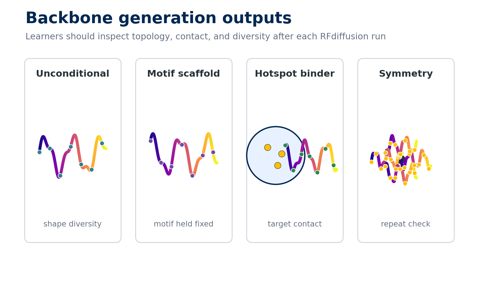

2. RFdiffusion: Advanced Design
Live Workshop Session

After each RFdiffusion run, inspect more than whether files were written. Look for topology, diversity, motif retention, hotspot contact, and whether symmetry or chain breaks behaved as intended.
Before You Begin: Choose an Execution Path
The activities on this page use the original RFdiffusion, not RFdiffusion2 or RFdiffusion All Atom. Use one of these equivalent learning paths:
- Run path: install the immutable course revision below, run one smoke-test design, then complete the exercises your compute budget permits.
- Analysis path: download the official, revision-pinned target and example outputs below. Complete the inspection, comparison, and selection prompts without claiming that you generated those structures.
Both paths produce the required artifact: a backbone gallery with observations about topology, diversity, target contact, hotspot contact, failure modes, and a reasoned keep/reject decision.
The course revision is RFdiffusion commit 86507b6538f51fce57b5a72477165f03999ed7ae, reviewed against the upstream repository on 2026-08-30. The commands are statically checked, but a complete maintainer GPU smoke test is not recorded. Run the one-design test on your own hardware before starting a campaign. See Reproducible Setup & Compute Fallbacks for the evidence to save.
Run path: install and smoke-test original RFdiffusion
Install on a networked login node. The upstream environment targets a CUDA 11.1-era stack, so use a separate environment from the newer Monday tools.
git clone https://github.com/RosettaCommons/RFdiffusion.git
cd RFdiffusion
git checkout --detach 86507b6538f51fce57b5a72477165f03999ed7ae
git submodule update --init --recursive
conda env create -f env/SE3nv.yml
conda activate SE3nv
python -m pip install --no-cache-dir -r env/SE3Transformer/requirements.txt
python -m pip install ./env/SE3Transformer
python -m pip install -e .Download the three checkpoints used across the exercises. These are large external files; if compute nodes have no network, download them here before requesting a GPU.
mkdir -p models
wget -nc -P models https://files.ipd.uw.edu/pub/RFdiffusion/6f5902ac237024bdd0c176cb93063dc4/Base_ckpt.pt
wget -nc -P models https://files.ipd.uw.edu/pub/RFdiffusion/e29311f6f1bf1af907f9ef9f44b8328b/Complex_base_ckpt.pt
wget -nc -P models https://files.ipd.uw.edu/pub/RFdiffusion/60f09a193fb5e5ccdc4980417708dbab/Complex_Fold_base_ckpt.ptFrom the RFdiffusion repository root, run the smallest useful smoke test:
mkdir -p smoke_test
python scripts/run_inference.py \
'contigmap.contigs=[75-75]' \
inference.output_prefix=smoke_test/design \
inference.num_designs=1
test -s smoke_test/design_0.pdb
export RFDIFFUSION_ROOT="$PWD"If the final command succeeds, keep that shell open for the exercises. RFDIFFUSION_ROOT prevents the nested activity steps from losing track of the installation directory.
Analysis path: use official known-good outputs
These files are maintained in the RFdiffusion repository at the exact course commit. They are small enough to inspect on a laptop and do not require model weights.
mkdir -p rfdiffusion-known-good
cd rfdiffusion-known-good
curl -LO https://raw.githubusercontent.com/RosettaCommons/RFdiffusion/86507b6538f51fce57b5a72477165f03999ed7ae/tutorials/protein_binder_design/Part1-Diffusion/channel-toxin.pdb
curl -LO https://raw.githubusercontent.com/RosettaCommons/RFdiffusion/86507b6538f51fce57b5a72477165f03999ed7ae/tutorials/protein_binder_design/Part1-Diffusion/outputs-test/binder__0.pdb
curl -LO https://raw.githubusercontent.com/RosettaCommons/RFdiffusion/86507b6538f51fce57b5a72477165f03999ed7ae/tutorials/protein_binder_design/Part1-Diffusion/outputs-test/binder__1.pdb
curl -LO https://raw.githubusercontent.com/RosettaCommons/RFdiffusion/86507b6538f51fce57b5a72477165f03999ed7ae/tutorials/protein_binder_design/Part1-Diffusion/outputs-test/binder__2.pdbOpen the target and all three complexes together. For each candidate, identify the target and binder chains, describe the binder topology, note whether it contacts a compact target patch, flag visible clashes or extended regions, and record one reason to keep or reject it. Finish by ranking the three candidates and naming one additional computation you would request before sequence design.
Hands-On Exercise
- Setup for the activity.
- Go to the RFdiffusion installation and make a new directory for the activity:
cd "$RFDIFFUSION_ROOT"; mkdir -p activity.
- Go to the RFdiffusion installation and make a new directory for the activity:
- Generate unconditional monomers.
- Make a new folder for this example:
cd "$RFDIFFUSION_ROOT"; mkdir -p activity/1_uncond; cd activity/1_uncond - Copy
design_unconditional.shhere:cp ../../examples/design_unconditional.sh . - Edit the design script by using 1)
'contigmap.contigs=[75-150]', 2)inference.num_designs=5, 3)../../scripts/run_inference.py. - Run the script:
bash design_unconditional.sh- What did the script create?
- Look at the structures. What are kinds of topologies did you get?
- Make a new folder for this example:
- Generate monomers that scaffold a motif.
- Make a new folder for this example:
cd "$RFDIFFUSION_ROOT"; mkdir -p activity/2_motifs; cd activity/2_motifs - Copy
design_motifscaffolding.shhere:cp ../../examples/design_motifscaffolding.sh . - For this example, we’ll be scaffolding a site from RSV-F protein. Let’s copy that .pdb here:
cp ../../examples/input_pdbs/5TPN.pdb . - Edit the design script by using 1)
inference.input_pdb=5TPN.pdb, 2)'contigmap.contigs=[10-40/A163-181/10-40]', 3)inference.num_designs=5, 4)../../scripts/run_inference.py.- The backbone we’re generating will have 10–40 residues (randomly sampled), the motif residues 163–181 (inclusive) on chain A of the input, then 10–40 residues (randomly sampled).
- Run the script:
bash design_motifscaffolding.sh- Look at the structures. How well is the motif scaffolded?
- Make a new folder for this example:
- Generate partially diffused structures.
- Make a new folder for this example:
cd "$RFDIFFUSION_ROOT"; mkdir -p activity/3_partial; cd activity/3_partial - Copy
design_partialdiffusion.shhere:cp ../../examples/design_partialdiffusion.sh . - For this example, we’ll be partially noising and denoising a 79 residue protein 2KL8. Let’s copy that .pdb here:
cp ../../examples/input_pdbs/2KL8.pdb . - Edit the design script by using 1)
inference.input_pdb=2KL8.pdb, 2)'contigmap.contigs=[79-79]', and 3)inference.num_designs=5.- Here we’re generating diversity around a particular fold by noising and denoising 10 steps (20% of the full trajectory). We’re adding noise to the entire structure (all 79 residues), but part of the structure can also be held fixed.
- Run the script:
bash design_partialdiffusion.sh- Look at the structures. How similar are the outputs to the original structure?
- Make a new folder for this example:
- Generate binders with hotspots.
- Make a new folder for this example:
cd "$RFDIFFUSION_ROOT"; mkdir -p activity/4_hotspot; cd activity/4_hotspot - Copy
design_ppi.shhere:cp ../../examples/design_ppi.sh . - For this example, we’ll be designing binders to insulin receptor. Let’s copy that .pdb here:
cp ../../examples/input_pdbs/insulin_target.pdb . - Edit the design script by using 1)
inference.input_pdb=insulin_target.pdb, 2)'contigmap.contigs=[A1-150/0 70-100]', 3)'ppi.hotspot_res=[A59,A83,A91]', 4)inference.num_designs=5, 5)denoiser.noise_scale_ca=0, and 6)denoiser.noise_scale_frame=0.- Here, we’re designing binders to insulin receptor. The contig describes the protein we want: residues 1–150 of the A chain of the receptor, a chain break (we don’t want to fuse the binder and target!), and a 70–100 residue binder to be diffused. We also tell diffusion to target residues 59, 83, and 91 of chain A. Finally, we reduce the noise added during inference to 0 to improve the quality of the designs.
- Run the script:
bash design_ppi.sh- Look at the structures. What are the topologies of your binders?
- Make a new folder for this example:
- Generate fold-conditioned structures.
- Make a new folder for this example:
cd "$RFDIFFUSION_ROOT"; mkdir -p activity/5_fold_cond; cd activity/5_fold_cond - Copy
design_timbarrel.shhere:cp ../../examples/design_timbarrel.sh . - For this example, we’ll be diffusing a TIM barrel by providing course-grained specification of the fold. Let’s copy that fold information here:
cp -r ../../examples/tim_barrel_scaffold/ .- What do the files in this folder represent?
- Edit the design script by using
inference.num_designs=5.- Here, we’re making a TIM barrel by providing a coarse-grained specification of the fold. We specify the output path, request scaffold-guided monomer design, and provide a directory of TIM-barrel scaffolds generated with
helper_scripts/make_secstruc_adj.py. We generate five designs with an inference noise scale of 0.5, mask loops, insert 0–5 residues into each loop, and add 0–5 residues to each terminus to sample additional diversity.
- Here, we’re making a TIM barrel by providing a coarse-grained specification of the fold. We specify the output path, request scaffold-guided monomer design, and provide a directory of TIM-barrel scaffolds generated with
- Run the script:
bash design_timbarrel.sh- Look at the structures. How do these generations compare to the TIM barrel structure used for conditioning (6WVS)?
- Make a new folder for this example:
- Generate oligomers of various symmetries.
- Make a new folder for this example:
cd "$RFDIFFUSION_ROOT"; mkdir -p activity/6_symmetry; cd activity/6_symmetry - Copy
design_cyclic_oligos.sh,design_dihedral_oligos.sh, anddesign_tetrahedral_oligos.shhere:cp ../../examples/design_cyclic_oligos.sh .,cp ../../examples/design_dihedral_oligos.sh ., andcp ../../examples/design_tetrahedral_oligos.sh . - Generate cyclic oligomers:
- Edit the
design_cyclic_oligos.shscript by changing 1)inference.symmetry="C4", 2)inference.num_designs=5, 3)inference.output_prefix="example_outputs/C4_oligo", and 4)'contigmap.contigs=[200-200]'.- In this example, we generate 5 designs of C4 symmetric oligomers. For symmetrical diffusion, we need the symmetry config. We also apply an external potential to promote contacts both within (with a relative weight of 1) and between chains (relative weight 0.1). We specify that we want to apply these potentials to all chains, with a guide scale of 2.0 (a sensible starting point). We decay this potential with quadratic form, so that it is applied more strongly initially. We specify a total length of 200 aa, so each chain is 50 residues long.
- Run the script:
bash design_cyclic_oligos.sh- Do the structures have the desired symmetry?
- What topologies are found in the individual subunits?
- Edit the
- Generate dihedral oligomers:
- Edit the
design_dihedral_oligos.shscript by changinginference.num_designs=2.- In this example, we generate 2 D2 symmetric oligomers using the symmetry config. We also apply an external potential to promote contacts both within (with a relative weight of 1) and between chains (relative weight 0.1). We specify that we want to apply these potentials to all chains, with a guide scale of 2.0 (a sensible starting point). We decay this potential with quadratic form, so that it is applied more strongly initially. We specify a total length of 320 aa, so each chain is 80 residues long.
- Run the script:
bash design_dihedral_oligos.sh- Do the structures have the desired symmetry?
- What topologies are found in the individual subunits?
- Edit the
- Generate tetrahedral oligomers:
- Edit the
design_tetrahedral_oligos.shscript by changing 1)inference.num_designs=2, 2)'contigmap.contigs=[720-720]'.- In this example, we generate tetrahedral symmetric oligomers. We use the symmetry config, and specify we want a tetrahedral oligomer, with 2 designs generated. We specify the output prefix, and also the potential we want to apply. This external potential promotes contacts both within (with a relative weight of 1) and between chains (relative weight 0.1). We specify that we want to apply these potentials to all chains, with a guide scale of 2.0 (a sensible starting point). We decay this potential with quadratic form, so that it is applied more strongly initially. We specify a total length of 720 aa, so each chain is 60 residues long
- Run the script:
bash design_tetrahedral_oligos.sh- Do the structures have the desired symmetry?
- What topologies are found in the individual subunits?
- Edit the
- Make a new folder for this example:
Independent Project
(Use your target protein)
Milestone 1: Target Preparation & Initial Exploration
- Set up your project directory structure
- Download and inspect your assigned target PDB
- Identify the binding surface and hotspot residues from the table below
- Run 2-3 test designs to verify your setup is working correctly
Milestone 2: Hotspot-free, target-conditioned Binder Generation
- Generate at least 10 binders of length 70–100 in the presence of your target, but omit
ppi.hotspot_res. This is an unguided target-conditioned baseline, not unconditional monomer generation.- Is there a particular epitope on the target that RFdiffusion prefers?
- Is there a particular binder topology that RFdiffusion prefers?
Milestone 3: Hotspot-Guided Binder Design
- Protein-binder studies such as Watson et al. and the BindCraft preprint illustrate hotspot-guided campaigns. For this course, use the canonical structure, chain, and interface-derived steering hotspots below; they intentionally replace the historic live-workshop records where those records differ from the capstone target pages. Generate at least 10 hotspot-guided binders toward your target.
- Is there a particular binder topology that RFdiffusion prefers to generate?
| Target | UniProt ID | PDB ID | Recommended steering hotspots |
|---|---|---|---|
| PD-L1 | Q9NZQ7 | 4ZQK | A56, A58, A113, A122, A123 |
| IL-7R alpha | P16871 | 3DI2 | B80, B81, B82, B192, B193 |
| TrkA receptor | P04629 | 1WWW | X303, X343, X347, X350, X353 |
| IFNAR2 | P48551 | 3SE3 | C44, C46, C48, C80, C100, C103 |
| Bet v 1 | P15494 | 4A88 | A10, A42, A45, A47 |
The exact PDB, chain, and hotspot records above come from data/targets.yml. Use the linked target deep-dive page to understand how each set was chosen.
Milestone 4: Potential Optimization
- Potentials can be powerful ways to bias the generation process. Try at least 3 different combinations of potentials, generating 5 backbones with each. Be sure to use hotspots for these generations too!
- How did the potentials change your outputs?
- Did you find a particularly useful configuration of potentials?
Milestone 5: Analysis & Selection
- Compare your hotspot-free target-conditioned, hotspot-guided, and potential-optimized designs
- Identify your top 3-5 most promising binder designs
- Document what makes these designs stand out (binding pose, topology, contact with hotspots, etc.)
Troubleshooting Guide
Common Issues & Solutions
| Problem | Likely Cause | Solution |
|---|---|---|
| “CUDA out of memory” | GPU memory exhausted | Reduce inference.num_designs to 1-2, or design smaller proteins |
| Script hangs at “Initializing model” | Missing model weights or incorrect paths | Verify RFdiffusion installation and model checkpoint paths |
| “FileNotFoundError” for input PDB | Incorrect file path or missing file | Check that PDB file exists in current directory with ls *.pdb |
| Designs look extended/unfolded | Insufficient denoising or inappropriate settings | Check inference.num_steps (should be ~50), verify contig syntax |
| Binders don’t contact target | Incorrect contig specification or chainbreak | Verify /0 chainbreak in contigs, check residue numbering in target PDB |
| Binders don’t contact hotspots | Hotspot residues too far apart or incorrect chain ID | Verify chain IDs and residue numbers match your PDB file exactly |
| “ImportError” or module not found | Conda environment not activated | Activate RFdiffusion environment: conda activate RFdiffusion (or appropriate env name) |
| Script runs but produces no outputs | Output directory doesn’t exist or permissions issue | Check that output directory exists, verify write permissions |
| Symmetric oligomers don’t look symmetric | Incorrect symmetry specification or potentials | Verify symmetry string (e.g., “C4”, “D2”, “T”), check potential settings |
| Very slow generation times | Normal for large/complex designs | Tetrahedral oligomers can take 30-60 min. Consider using screen or tmux |
| All designs look very similar | Insufficient diversity sampling | Increase contig length ranges (e.g., [60-100] instead of [80-80]), adjust noise scales |
Tips for Success
- Always check your PDB file first: Use PyMOL or ChimeraX to verify chain IDs and residue numbering before running
- Start small: Test with
num_designs=1first to verify your setup works - Save your commands: Keep a log of successful parameter combinations
- Use descriptive output names: Include key parameters in output_prefix (e.g.,
hotspot_A59_A83_A91) - Check the logs: RFdiffusion creates log files - read them if something goes wrong